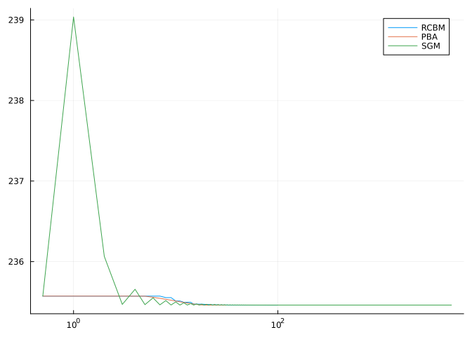

A comparison of the RCBM with the PBA, the SGM for solving the spectral Procrustes problem
Hajg Jasa 2024-06-27
Introduction
In this example we compare the Riemannian Convex Bundle Method (RCBM) [BHJ24] with the Proximal Bundle Algorithm, which was introduced in [HNP23], and with the Subgradient Method (SGM), introduced in [FO98], to solve the spectral Procrustes problem on $\mathrm{SO}(250)$. This example reproduces the results from [BHJ24], Section 5.
using PrettyTables
using BenchmarkTools
using CSV, DataFrames
using ColorSchemes, Plots
using QuadraticModels, RipQP
using Random, LinearAlgebra, LRUCache
using ManifoldDiff, Manifolds, Manopt, ManoptExamplesThe Problem
Given two matrices $A, B \in \mathbb R^{n \times d}$ we aim to solve the Procrustes problem
\[ {\arg\min}_{p \in \mathrm{SO}(d)}\ \Vert A - B \, p \Vert_2 ,\]
where $\mathrm{SO}(d)$ is equipped with the standard bi-invariant metric, and where $\Vert \,\cdot\, \Vert_2$ denotes the spectral norm of a matrix, , its largest singular value. We aim to find the best matrix $p \in \mathbb R^{d \times d}$ such that $p^\top p = \mathrm{id}$ is the identity matrix, or in other words $p$ is the best rotation. Note that the spectral norm is convex in the Euclidean sense, but not geodesically convex on $\mathrm{SO}(d)$. Let us define the objective as
\[ f (p) = \Vert A - B \, p \Vert_2 .\]
To obtain subdifferential information, we use
\[ \mathrm{proj}_p(-B^\top UV^\top)\]
as a substitute for $\partial f(p)$, where $U$ and $V$ are some left and right singular vectors, respectively, corresponding to the largest singular value of $A - B \, p$, and $\mathrm{proj}_p$ is the projection onto
\[ \mathcal T_p \mathrm{SO}(d) = \{ A \in \mathbb R^{d,d} \, \vert \, pA^\top + Ap^\top = 0, \, \mathrm{trace}(p^{-1}A)=0 \} .\]
Numerical Experiment
We initialize the experiment parameters, as well as some utility functions.
Random.seed!(33)
n = 1000
d = 250
A = rand(n, d)
B = randn(n, d)
tol = 1e-8
max_iters = 5000
#
# Compute the orthogonal Procrustes minimizer given A and B
function orthogonal_procrustes(A, B)
s = svd((A'*B)')
R = s.U* s.Vt
return R
end
#
# Algorithm parameters
k_max = 1/4
k_min = 0.0
diameter = π/(3 * √k_max)
#
# Manifolds and data
M = SpecialOrthogonal(d)
p0 = orthogonal_procrustes(A, B)
project!(M, p0, p0)We now define objective and subdifferential (first the Euclidean one, then the projected one).
f(M, p) = opnorm(A - B*p)
function ∂ₑf(M, p)
cost_svd = svd(A - B*p)
# Find all maxima in S – since S is sorted, these are the first n ones
indices = [i for (i, v) in enumerate(cost_svd.S) if abs(v - cost_svd.S[1]) < eps()]
ind = rand(indices)
return -B'*(cost_svd.U[:,ind]*cost_svd.Vt[ind,:]')
end
rpb = Manifolds.RiemannianProjectionBackend(Manifolds.ExplicitEmbeddedBackend(M; gradient=∂ₑf))
∂f(M, p) = Manifolds.gradient(M, f, p, rpb)
domf(M, p) = distance(M, p, p0) < diameter/2 ? true : falseWe introduce some keyword arguments for the solvers we will use in this experiment
rcbm_kwargs = [
:cache => (:LRU, [:Cost, :SubGradient], 50),
:diameter => diameter,
:debug => [
:Iteration,
(:Cost, "F(p): %1.16f "),
(:ξ, "ξ: %1.8f "),
(:ε, "ε: %1.8f "),
(:last_stepsize, "step size: %1.8f"),
:WarnBundle,
:Stop,
10,
"\n",
],
:domain => domf,
:k_max => k_max,
:k_min => k_min,
:record => [:Iteration, :Cost, :Iterate],
:return_state => true,
]
rcbm_bm_kwargs = [
:cache => (:LRU, [:Cost, :SubGradient], 50),
:diameter => diameter,
:domain => domf,
:k_max => k_max,
:k_min => k_min,
]
pba_kwargs = [
:cache => (:LRU, [:Cost, :SubGradient], 50),
:debug =>[
:Iteration,
:Stop,
(:Cost, "F(p): %1.16f "),
(:ν, "ν: %1.16f "),
(:c, "c: %1.16f "),
(:μ, "μ: %1.8f "),
:Stop,
:WarnBundle,
10,
"\n",
],
:record => [:Iteration, :Cost, :Iterate],
:return_state => true,
]
pba_bm_kwargs = [
:cache =>(:LRU, [:Cost, :SubGradient], 50),
]
sgm_kwargs = [
:cache => (:LRU, [:Cost, :SubGradient], 50),
:debug => [:Iteration, (:Cost, "F(p): %1.16f "), :Stop, 1000, "\n"],
:record => [:Iteration, :Cost, :p_star],
:return_state => true,
:stepsize => DecreasingLength(; exponent=1, factor=1, subtrahend=0, length=1, shift=0, type=:absolute),
:stopping_criterion => StopWhenSubgradientNormLess(√tol) | StopAfterIteration(max_iters),
]
sgm_bm_kwargs = [
:cache => (:LRU, [:Cost, :SubGradient], 50),
:stepsize => DecreasingLength(; exponent=1, factor=1, subtrahend=0, length=1, shift=0, type=:absolute),
:stopping_criterion => StopWhenSubgradientNormLess(√tol) | StopAfterIteration(max_iters),
]
global header = ["Algorithm", "Iterations", "Time (s)", "Objective"]We run the optimization algorithms…
rcbm = convex_bundle_method(M, f, ∂f, p0; rcbm_kwargs...)
rcbm_result = get_solver_result(rcbm)
rcbm_record = get_record(rcbm)
#
pba = proximal_bundle_method(M, f, ∂f, p0; pba_kwargs...)
pba_result = get_solver_result(pba)
pba_record = get_record(pba)
#
sgm = subgradient_method(M, f, ∂f, p0; sgm_kwargs...)
sgm_result = get_solver_result(sgm)
sgm_record = get_record(sgm)… And we benchmark their performance.
if benchmarking
pba_bm = @benchmark proximal_bundle_method($M, $f, $∂f, $p0; $pba_bm_kwargs...)
rcbm_bm = @benchmark convex_bundle_method($M, $f, $∂f, $p0; $rcbm_bm_kwargs...)
sgm_bm = @benchmark subgradient_method($M, $f, $∂f, $p0; $sgm_bm_kwargs...)
#
experiments = ["RCBM", "PBA", "SGM"]
records = [rcbm_record, pba_record, sgm_record]
results = [rcbm_result, pba_result, sgm_result]
times = [
median(rcbm_bm).time * 1e-9,
median(pba_bm).time * 1e-9,
median(sgm_bm).time * 1e-9,
]
if show_plot
global fig = plot(xscale=:log10)
end
#
global D = cat(
experiments,
[maximum(first.(record)) for record in records],
[t for t in times],
[minimum([r[2] for r in record]) for record in records];
dims=2,
)
#
#
# Finalize - export costs
if export_table
for (time, record, result, experiment) in zip(times, records, results, experiments)
C1 = [0.5 f(M, p0)]
C = cat(first.(record), [r[2] for r in record]; dims=2)
bm_data = vcat(C1, C)
CSV.write(
joinpath(results_folder, experiment_name * "_" * experiment * "-result.csv"),
DataFrame(bm_data, :auto);
header=["i", "cost"],
)
if show_plot
plot!(fig, bm_data[:,1], bm_data[:,2]; label=experiment)
end
end
CSV.write(
joinpath(results_folder, experiment_name * "-comparisons.csv"),
DataFrame(D, :auto);
header=header,
)
end
endWe can take a look at how the algorithms compare to each other in their performance with the following table…
| Algorithm | Iterations | Time (s) | Objective |
|---|---|---|---|
| RCBM | 99 | 102.036 | 235.46 |
| PBA | 31 | 5.8049 | 235.46 |
| SGM | 5000 | 402.739 | 235.46 |
… and this cost versus iterations plot

Technical details
This tutorial is cached. It was last run on the following package versions.
using Pkg
Pkg.status()Status `~/Repositories/Julia/ManoptExamples.jl/examples/Project.toml`
[6e4b80f9] BenchmarkTools v1.5.0
[336ed68f] CSV v0.10.15
[35d6a980] ColorSchemes v3.27.1
⌅ [5ae59095] Colors v0.12.11
[a93c6f00] DataFrames v1.7.0
[7073ff75] IJulia v1.26.0
[682c06a0] JSON v0.21.4
[8ac3fa9e] LRUCache v1.6.1
[d3d80556] LineSearches v7.3.0
[af67fdf4] ManifoldDiff v0.3.13
[1cead3c2] Manifolds v0.10.7
[3362f125] ManifoldsBase v0.15.22
[0fc0a36d] Manopt v0.5.3 `../../Manopt.jl`
[5b8d5e80] ManoptExamples v0.1.10 `..`
[51fcb6bd] NamedColors v0.2.2
[91a5bcdd] Plots v1.40.9
⌃ [08abe8d2] PrettyTables v2.3.2
[6099a3de] PythonCall v0.9.23
[f468eda6] QuadraticModels v0.9.7
[1e40b3f8] RipQP v0.6.4
Info Packages marked with ⌃ and ⌅ have new versions available. Those with ⌃ may be upgradable, but those with ⌅ are restricted by compatibility constraints from upgrading. To see why use `status --outdated`using Dates
now()2024-11-29T09:36:53.667Literature
- [BHJ24]
- R. Bergmann, R. Herzog and H. Jasa. The Riemannian Convex Bundle Method, preprint (2024), arXiv:2402.13670.
- [FO98]
- O. Ferreira and P. R. Oliveira. Subgradient algorithm on Riemannian manifolds. Journal of Optimization Theory and Applications 97, 93–104 (1998).
- [HNP23]
- N. Hoseini Monjezi, S. Nobakhtian and M. R. Pouryayevali. A proximal bundle algorithm for nonsmooth optimization on Riemannian manifolds. IMA Journal of Numerical Analysis 43, 293–325 (2023).